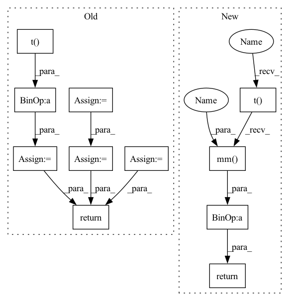

Pattern ID :2128
Before Change
// calculate mean and covariance
n = real_features.shape[0]
m = fake_features.shape[0]
mean1 = real_features.mean(dim=0)
mean2 = fake_features.mean(dim=0)
diff1 = real_features - mean1
diff2 = fake_features - mean2
cov1 = 1.0 / (n - 1) * diff1.t() .mm(diff1)
cov2 = 1.0 / (m - 1) * diff2.t().mm(diff2)
// compute fid
return _compute_fid(mean1, cov1, mean2, cov2).to(orig_dtype)
def reset(self) -> None:
if not self.reset_real_features:After Change
cov_real_num = self.real_features_cov_sum - self.real_features_num_samples * mean_real.t().mm(mean_real)
cov_real = cov_real_num / (self.real_features_num_samples - 1)
cov_fake_num = self.fake_features_cov_sum - self.fake_features_num_samples * mean_fake.t().mm(mean_fake )
cov_fake = cov_fake_num / (self.fake_features_num_samples - 1)
return _compute_fid(mean_real.squeeze(0), cov_real, mean_fake.squeeze(0), cov_fake).to(self.orig_dtype)
def reset(self) -> None:
if not self.reset_real_features:In pattern: SUPERPATTERN
Frequency: 3
Non-data size: 11
Instances Fragment ID: 9150986
Project Name: pytorchlightning/metrics
Commit Name: bad3607a58cc48367b9b176cb944ccc1b398d391
Time: 2022-09-05
Author: 33259879+nicolas-dufour@users.noreply.github.com
File Name: src/torchmetrics/image/fid.py
M Class Name: FrechetInceptionDistance
N Class Name: FrechetInceptionDistance
M Method Name: compute(1)
N Method Name: compute(1)
M Parent Class: Metric
N Parent Class: Metric
M File Name: src/torchmetrics/image/fid.py
N File Name: src/torchmetrics/image/fid.py
M Start Line: 262
M End Line: 280
N Start Line: 279
N End Line: 286
Before Change
// calculate mean and covariance
n = real_features.shape[0]
m = fake_features.shape[0]
mean1 = real_features.mean(dim=0)
mean2 = fake_features.mean(dim=0)
diff1 = real_features - mean1
diff2 = fake_features - mean2
cov1 = 1.0 / (n - 1) * diff1.t() .mm(diff1)
cov2 = 1.0 / (m - 1) * diff2.t().mm(diff2)
// compute fid
return _compute_fid(mean1, cov1, mean2, cov2).to(orig_dtype)
def reset(self) -> None:
if not self.reset_real_features:After Change
def compute(self) -> Tensor:
Calculate FID score based on accumulated extracted features from the two distributions.
mean_real = (self.real_features_sum / self.real_features_num_samples).unsqueeze(0)
mean_fake = (self.fake_features_sum / self.fake_features_num_samples).unsqueeze(0)
cov_real_num = self.real_features_cov_sum - self.real_features_num_samples * mean_real.t().mm(mean_real)
cov_real = cov_real_num / (self.real_features_num_samples - 1)
cov_fake_num = self.fake_features_cov_sum - self.fake_features_num_samples * mean_fake.t().mm( mean_fake)
cov_fake = cov_fake_num / (self.fake_features_num_samples - 1)
return _compute_fid(mean_real.squeeze(0), cov_real, mean_fake.squeeze(0), cov_fake).to(self.orig_dtype)
def reset(self) -> None:
if not self.reset_real_features: Fragment ID: 9150856
Project Name: lightning-ai/metrics
Commit Name: bad3607a58cc48367b9b176cb944ccc1b398d391
Time: 2022-09-05
Author: 33259879+nicolas-dufour@users.noreply.github.com
File Name: src/torchmetrics/image/fid.py
M Class Name: FrechetInceptionDistance
N Class Name: FrechetInceptionDistance
M Method Name: compute(1)
N Method Name: compute(1)
M Parent Class: Metric
N Parent Class: Metric
M File Name: src/torchmetrics/image/fid.py
N File Name: src/torchmetrics/image/fid.py
M Start Line: 262
M End Line: 280
N Start Line: 279
N End Line: 286
Before Change
// www.manoptjl.org/stable/manifolds/stiefel///Base.exp
// Eq before 2.14
// https://arxiv.org/pdf/physics/9806030.pdf
X1 = torch.cat([base, x], dim=1)
bx = base.t() .mm(x)
xx = x.t().mm( x)
Id = torch.eye(base.size(1), dtype=base.dtype, device=base.device)
X2 = torch.cat([torch.cat([bx, -xx ], dim=1), torch.cat([Id, bx], dim=1)])
eX2 = expm(X2)
embx = expm(-bx )
zeros = torch.zeros_like(Id)
X3 = torch.cat([embx, zeros])
// Order matters
ret = X1.mm(X2.mm(X3))
if self.inverted:
ret = ret.t()
return ret
@classmethod
def apply(cls, module, name, mode="auto"):After Change
def trivialization(self, x, base):
// Size of the original matrix
n, k = self.size
return super().trivialization(x, base)[:n, :k]
def update_base(self):
if "orig" not in self._parameters: Fragment ID: 9150995
Project Name: lezcano/geotorch
Commit Name: ada013178cb25a391184cd6ffcd920ccc2109e69
Time: 2020-03-11
Author: lezcano-93@hotmail.com
File Name: mantorch/orthogonal.py
M Class Name: Stiefel
N Class Name: Stiefel
M Method Name: trivialization(3)
N Method Name: trivialization(3)
M Parent Class: SO
N Parent Class: BaseManifold
M File Name: mantorch/orthogonal.py
N File Name: mantorch/orthogonal.py
M Start Line: 191
M End Line: 213
N Start Line: 106
N End Line: 107